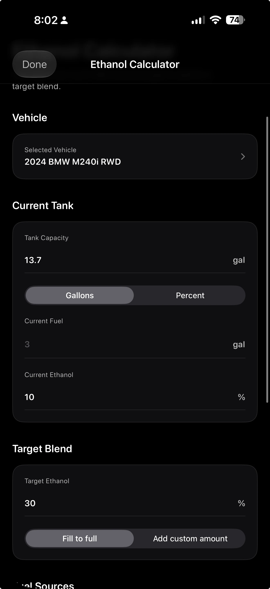

Fuel math
Calculate your ethanol blend without guessing
The pump name is not the number your calculation needs. Start with the ethanol already in the tank, the tested or supported estimate for the fuel you are adding, and a target your vehicle is built and calibrated to use.
01
“E85” does not always mean 85%
The U.S. Department of Energy’s Alternative Fuels Data Center describes E85, also called flex fuel, as a gasoline-ethanol blend containing 51% to 83% ethanol, depending on geography and season. EPA describes it as containing up to 85% ethanol.
That range matters. If you enter 85% because the pump says E85 but the fuel is actually E70, your result will not land on the target you calculated.
Nominally 10% ethanol and 90% gasoline. Most U.S. gasoline contains ethanol, commonly as E10.
A 50% ethanol target. This is a calculated blend, not a promise that a vehicle can use it.
The market name for flex fuel. Actual ethanol content can vary rather than remaining fixed at 85%.
02
The blend formula
Ethanol blending is a volume-weighted average. Convert every percentage to a decimal before doing the math: 10% becomes 0.10, 50% becomes 0.50, and 75% becomes 0.75.
final ethanol fraction
When you know the current fuel and want to solve for how many gallons of the new fuel to add:
gallons to add
The second formula only works when the target falls between the current blend and the fuel being added. You cannot reach E60 by adding E50 to E10, and adding more fuel cannot lower a blend when the added fuel has a higher ethanol content than the tank.
03
Worked example: 4 gallons of E10 to an E50 target
Assume the car currently has 4.0 gallons of E10. The source fuel has been measured or reasonably estimated at E75. The supported target is E50.
-
1
Convert the percentages
E10 = 0.10, E75 = 0.75, and E50 = 0.50.
-
2
Put the values into the solve-for-add formula
4.0 × (0.50 − 0.10) ÷ (0.75 − 0.50)
-
3
Calculate the addition
4.0 × 0.40 ÷ 0.25 = 6.4 gallons of E75.
-
4
Check the result
The original fuel contains 0.4 gallon of ethanol. The added fuel contains 4.8 gallons. That is 5.2 gallons of ethanol in 10.4 total gallons: 5.2 ÷ 10.4 = 0.50, or E50.
04
What changes if you assume the pump is E85?
Using the same 4 gallons of E10 and E50 target, but entering 0.85 for the source fuel, the calculator asks for about 4.57 gallons. If the fuel is actually E75, that addition produces roughly E44.7—not E50.
The math is correct for an 85% source.
The input was wrong, so the accurate calculation answered the wrong question.
This is why a blend calculator should show the assumptions and why the person filling the car should review them before pumping.
05
Check whether the answer fits in the tank
The worked example ends with 10.4 gallons total. Before using it, compare that with the vehicle’s usable capacity and the uncertainty in the current amount.
- A dashboard fuel gauge is not a laboratory volume measurement.
- Tank capacity in a manual is not permission to fill every last theoretical fraction.
- A sloped parking surface, fuel temperature, pump shutoff, and the shape of the tank can all affect how much actually goes in.
- If the calculated addition does not fit with a sensible margin, use a different starting fuel amount or target plan supported by the vehicle setup.
Do not keep forcing fuel in after the pump shuts off automatically. EPA advises against topping off because it can cause spills and interfere with vapor-recovery equipment.
06
The pre-pump check
What is it allowed to run?
Check the owner’s manual for a factory vehicle. For a modified vehicle, use the explicit limit from the tuner and the supported fuel-system hardware—not a forum answer for a similar build.
What is in it now?
Record the current amount and current ethanol content. If either is an estimate, understand that the final blend is also an estimate.
What are you adding?
Use measured content when the setup needs precision. Otherwise enter a defensible estimate and leave room for variation.
Does it pass a reality check?
Verify the units, addition amount, final amount, tank margin, and target one more time before pumping.
07
Six mistakes that make a clean calculation useless
- Entering E85 as 85% without checking the assumption.The market name can cover a range of actual ethanol content.
- Using the fuel gauge as an exact gallon measurement.The formula can only be as precise as the current-volume input.
- Averaging the percentages directly.One gallon of E10 and nine gallons of E70 do not average to E40. Volume has to weight the percentages.
- Confusing target blend with source fuel.E50 may be the desired result; it does not describe what is coming out of the pump.
- Rounding at every step.Keep additional decimal places through the calculation, then round the final practical fill amount.
- Treating the result as approval.A mathematically possible blend can still be incompatible with the vehicle, tune, fuel system, or operating conditions.
08
Use the same inputs in Idle
Idle’s ethanol calculator works from the current fuel amount and ethanol content, your target, and the amount you plan to add. Save recurring fuel details to your own Garage vehicle or enter values for a one-off plan.
Review the inputs every time. Saved numbers can become stale when the tune, tank estimate, pump source, or fuel plan changes.
See how Idle’s calculator works
Sources and limits
What this guide is based on
This guide explains blend arithmetic and public fuel guidance. It is not tuning, mechanical, or fuel-system advice for a specific vehicle.
- U.S. Department of Energy Alternative Fuels Data Center: flexible-fuel vehicles — E85 composition range, FFV capability, and fuel-economy context.
- U.S. Department of Energy Alternative Fuels Data Center: ethanol fuel basics — common ethanol blends and vehicle compatibility.
- U.S. EPA: E85 fuel — E85 labeling and use in flexible-fuel vehicles.
- U.S. EPA: ethanol vehicles — checking the fuel door or owner’s manual to identify an FFV.
- U.S. EPA: do not top off a fuel tank — why automatic pump shutoff should end the fill.
Reviewed July 28, 2026. Confirm current agency guidance and the instructions for your exact vehicle before using any blend.